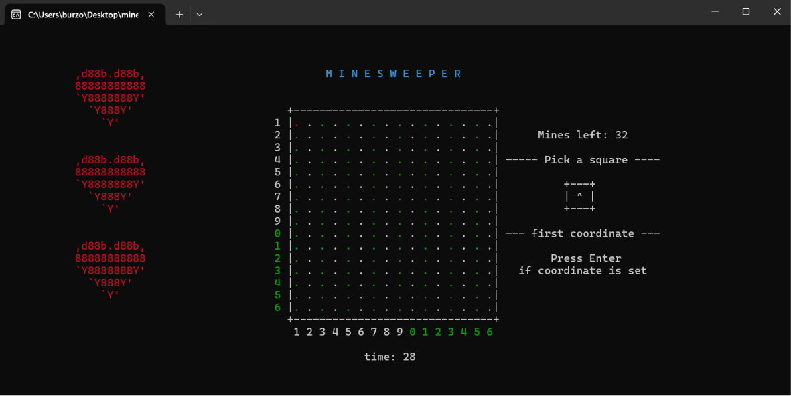

First game / Console
Minesweeper
A console Minesweeper project focused on grid logic, input handling, and clear text UI.
- Built the board state, mine placement, and reveal flow.
- Displayed player prompts and game status in the console.
- Handled coordinate selection and basic win/loss conditions.